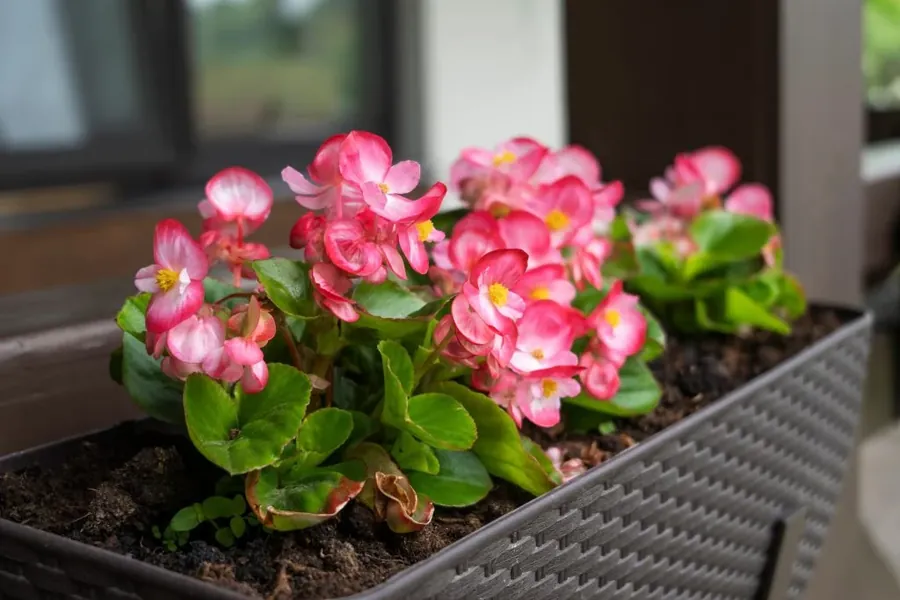

🌺 Conhecendo as plantas floridas!
As plantas floridas enchem o ambiente de cores e perfumes. As flores têm um papel importante: elas ajudam a planta a se reproduzir.

🌺 O que a planta florida gosta?
Antes de conhecer melhor essas plantas, descubra duas coisas importantes para cuidar delas:
Luz
Muitas plantas floridas precisam de boa luminosidade para florescer. A quantidade ideal depende da espécie.
Água
Muitas gostam de solo levemente úmido, sem encharcar. Observe a terra antes de regar.
Importante: uma planta que não floresce nem sempre está doente! Ela pode estar fora da época de flores ou precisar de mais luz. Cada espécie tem seu ritmo.
🌺 O que torna uma planta florida especial?
As flores são as partes da planta responsáveis pela reprodução. Muitas atraem insetos e outros animais que ajudam a levar o pólen de uma flor para outra.
Atraem visitantes
Cores e perfumes atraem abelhas, borboletas e outros animais. Eles ajudam a polinizar as flores.
Podem formar frutos
Depois da polinização, muitas flores dão origem a frutos com sementes.
Florescem em épocas
Muitas plantas têm períodos do ano em que florescem, que dependem da espécie e do ambiente.
🔎 Detetive das flores!
Toque nos tópicos para descobrir mais sobre as flores.
🌸 Para que servem as flores?
As flores ajudam a planta a se reproduzir. Após a polinização, muitas formam frutos e sementes.
🐝 O que é polinização?
É quando o pólen é levado de uma flor para outra, muitas vezes por abelhas, borboletas, beija-flores e até pelo vento.
🎨 Por que as flores têm tantas cores?
As cores e os perfumes ajudam a atrair os animais que ajudam na polinização.
✂️ Por que retirar flores murchas?
Em muitas espécies, remover flores secas deixa a planta mais bonita e pode ajudar a estimular novas flores. Peça ajuda a um adulto se precisar usar tesoura.
🪴 Como cuidar de uma planta florida?
Com alguns cuidados, muitas plantas floridas ficam bonitas por bastante tempo.
Dê boa luz
Muitas precisam de bastante claridade para florescer. Se a planta não floresce, a luz pode ser um dos motivos.
Regue com atenção
Mantenha o solo levemente úmido, conforme a espécie, e evite água parada no vaso.
Retire folhas e flores secas
Retirar partes secas ajuda a planta a ficar mais saudável e bonita. Peça ajuda a um adulto se precisar usar tesoura.
Observe as flores
Mudanças na cor ou no tamanho das flores e folhas podem dar pistas de como a planta está.
🧠 E agora, pequeno jardineiro?
Imagine que você tem uma plantinha florida que está só com folhas há meses. Ela fica em um canto bem escuro da casa. Será que existe algo que possa ajudar?
O que vale a pena tentar?
Descobrir a resposta
💡 Muitas plantas floridas precisam de bastante luz para florescer. Mudar a planta para um lugar mais claro pode ajudar.
Faça a mudança aos poucos e observe como a planta reage. Cada espécie tem suas próprias necessidades.
💡 Você sabia?
Algumas flores abrem e fecham durante o dia, acompanhando a luz! Outras só abrem à noite.
E o Meu PlantAmigo?
O Meu PlantAmigo acompanha a umidade do solo e ajuda a perceber quando a planta precisa de água. Para plantas floridas, uma rega equilibrada é importante: nem muito pouca, nem em excesso. A luz também faz diferença para que as flores apareçam.
🌺 Você virou especialista em plantas floridas!
Agora que você descobriu os segredos dessas plantas, teste seus conhecimentos no quiz.
Fazer o quiz